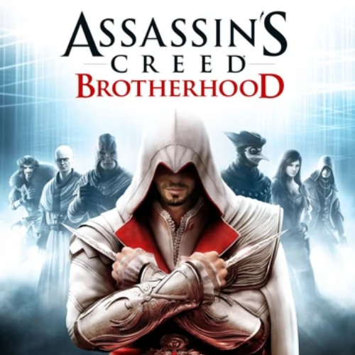
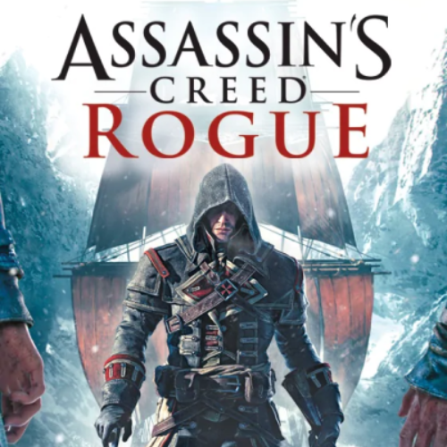

Assassins Creed (2007)

Assassins Creed 2 (2009)

AC Brotherhood (2010)

AC Revelations (2011)

Assassins Creed 3 (2012)

Assassins Creed Origins (2017)

Assassins Creed Syndicate (2015)

Assassins Creed Unity (2014)

Assassins Creed Rogue (2014)

Assassins Creed Black Flag (2013)

Assassins Creed Odyssey (2018)

Assassins Creed Valhalla (2020)